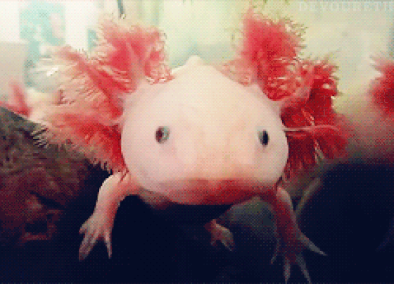
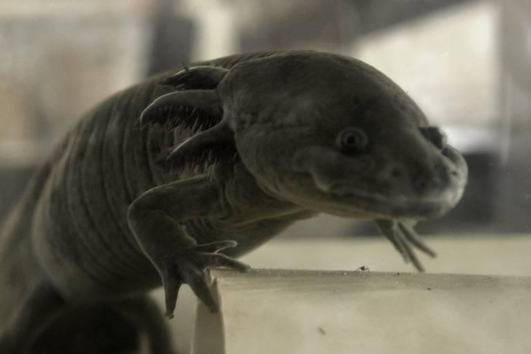

Este ajolote es, de alguna manera, el más representativo del grupo y una de sus peculiaridades se debe a que es una especie neoténica, de modo que los adultos que miden unos 15 cm o más tienen la apariencia de un renacuajo gigante. Es endémico de México y se encuentra en peligro crítico de extinción debido a los siguiente factores: contaminación del medio acuático donde habita, introducción de especies invasoras (peces), consumo masivo como alimento, supuestos usos medicinales y captura para la comercialización.

Este tipo de ajolote no suele superar los 12 cm de longitud. El dorso y los lados del cuerpo son negros violáceos, mientras que el vientre es purpura, pero además presenta unas franjas claras que van desde la cabeza hasta la cola.
Habita a grandes alturas sobre el nivel del mar, específicamente en pequeños ríos ubicados en bosques de pino o encino, aunque también están en aguas de pastizales. Las formas adultas pueden ser acuáticas o terrestres. La especie se encuentra en peligro de extinción.
Conocido también como salamandra de Anderson, los adultos de cuerpos robustos miden entre 10 y 14 cm, aunque hay ejemplares de mayores tamaños. La especie no se metamorfosea, su coloración es naranja oscuro con puntos o manchas negras sobre todo el cuerpo.
Hasta ahora solo se le ha ubicado en la laguna de Zacapu, en México, así como en arroyos y canales circundantes al cuerpo de agua mencionado. Suelen preferir estar en la vegetación del fondo acuático. Por desgracia, este tipo de ajolote también se encuentra en peligro crítico de extinción.
El ajolote de Pátzcuaro es una especie neoténica, la cual solo se encuentra en el lago Pátzcuaro de México y está considerada en peligro crítico. Tanto machos como hembras miden entre 15 y 28 cm aproximadamente.
Su coloración es uniforme y generalmente marrón tostado, sin embargo, algunos reportes indican también la presencia de individuos con esta tonalidad pero mezclados con violeta y otros tonos más claros en las zonas inferiores.
Esta especie tiene la peculiaridad que algunos individuos pueden ser neoténicos, mientras que otros llegan a presentar la metamorfosis, principalmente los que se encuentran en su entorno natural. Miden unos 16 cm o más y sus cuerpos presentan una coloración uniforme de gris a negra si no hacen la transformación, mientras que en las formas metamorfoseadas, las patas y zonas de la boca son de coloración más clara.
